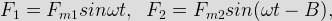
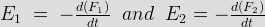
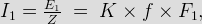
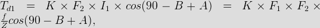
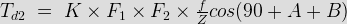
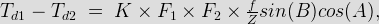
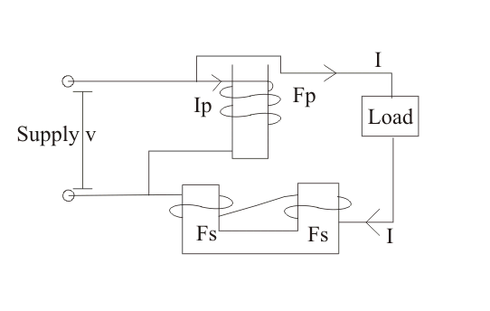

Induction Type Meters
The principle of working and construction of induction type meter is very simple and easy to understand that's why these are widely used in measuring energy in domestic as well as industrial world. In all induction meters we have two fluxes which are produced by two different alternating currents on a metallic disc. Due to alternating fluxes there is an induced emf, the emf produced at one point (as shown in the figure given below) interacts with the alternating electric current of the other side resulting in the production of torque.
Induction Type Meter
Similarly, the emf produced at the point two interacts with the alternating electric current at point one, resulting in the production of torque again but in opposite direction. Hence due to these two torques which are in different directions, the metallic disc moves. This is basic principle of working of an induction type meters. Now let us derive the mathematical expression for deflecting torque. Let us take flux produced at point one be equal to F1 and the flux and at point two be equal to F2. Now the instantaneous values of these two flux can written as:

where Fm1 and Fm2 are respectively the maximum values of fluxes F1 and F2, B is phase difference between two fluxes.
We can also write the expression for induced emf's at point one be
 at point two. Thus we have the expression for eddy currents at point one is

where K is some constant and f is frequency.
Let us draw phasor diagram clearly showing F1, F2, E1, E2, I1 and I2. From phasor diagram, it clear that I1 and I2 are respectively lagging behind E1 and E2 by angle A.
Phasor of Induction Type Meter
The angle between F1 and F2 is B. From the phasor diagram the angle between F2 and I1 is (90-B+A) and the angle between F1 and I2 is (90+B+A). Thus we write the expression for deflecting torque as

Similarly the expression for Td2 is,

The total torque is Td1 - Td2, on substituting the the value of Td1 and Td2 and simplying the expression we get

Which is known as the general expression for the deflecting torque in the induction type meters. Now there are two types of induction meters and they are written as follows:
(a)Single phase type (b) Three phase type induction meters. Here we are going to discuss about the single phase induction type in detail. Given below is the picture of single phase induction type meter.
Single Phase Induction Type Meter
Single phase induction type energy meter consists of four important systems which are written as follows:
(a) Driving system : Driving system consists of two electromagnets on which pressure coil and electric current coils are wounded, as shown above in the diagram. The coil which consisted of load current is called electric current coil while coil which is in parallel with the supply voltage (i.e. voltage across the coil is same as the supply voltage) is called pressure coil. Shading bands are wounded on as shown above in the diagram so as to make angle between the flux and and applied voltage equal to 90 degrees.
(b) Moving system : In order to reduce friction to greater extent floating shaft energy meter is used,the friction is reduced to greater extinct because the rotating disc which is made up of very light material like aluminium is not in contact with any of the surface. It floats in the air. One question must be arise in our mind is that how the aluminium disc float in the air? To answer this question we need to see the constructional details of this special disc, actually it consists of small magnets on both upper and lower surfaces. The upper magnet is attracted to an electromagnet in upper bearing while the lower surface magnet also attracts towards the lower bearing magnet, hence due to these opposite forces the light rotating aluminium disc floats.
(c) Braking system : A permanent magnet is used to produce breaking torque in single phase induction energy meters which are positioned near the corner of the aluminium disc.
(d) Counting system : Numbers marked on the meter are proportion to the revolutions made by the aluminium disc, the main function of this system is to record the number of revolutions made by the aluminium disc. Now let us look at the working operation of the single phase induction meter. In order to understand the working of this meter let us
consider the diagram given below:

Here we have assumed that the pressure coil is highly inductive in nature and consists of very large number of turns. The electric current flowin in the pressure coil is Ip which lags behind voltage by an angle of 90 degrees. This electric current produces flux F. F is divided into two parts Fg and Fp.
(1) Fg which moves on the small reluctance part across the side gaps.
(2) Fp: It is responsible for the production of driving torque in the aluminium disc. It moves from high reluctance path and is in phase with the electric current in the pressure coil. Fp is alternating in nature and thus emf Ep and electric current Ip. The load current which is shown in the above diagram is flowing through the electric current coil produces flux in the aluminium disc, and due this alternating flux there on the metallic disc, an eddy current is produced which interacts with the flux Fp which results in production of torque. As we have two poles, thus two torques are produced which are opposite to each other. Hence from the theory of induction meter that we have discussed already above the net torque is the difference of the two torques.
Advantages of Induction Type Meters
Following are the advantages of induction type meters:
(1)They are inexpensive as compared to moving iron type instruments.
(2)They have high torque is to weight ratio as compared to other instruments.
(3)They retain their accuracy over wide range of temperature as well as loads.
 by
by